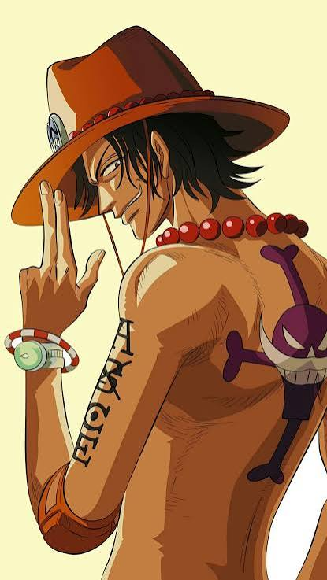
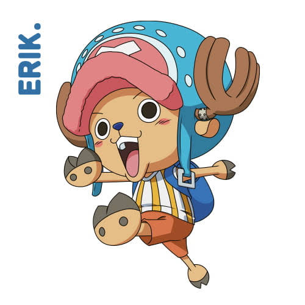

🏴☠️
Mis Personajes Favoritos
¡Conoce a los personajes más icónicos de One Piece!

Luffy
"¡Yo seré el Rey de los Piratas!"

Zoro
"¡Seré el mejor espadachín del mundo!"

Nami
"¡Quiero dibujar un mapa del mundo!"

Ace
"¡Quiero hacer que Barbablanca sea el Rey de los Piratas!"

Sanji
"¡Quiero encontrar el All Blue!"

Chopper
"¡Quiero curar cualquier enfermedad!"
×